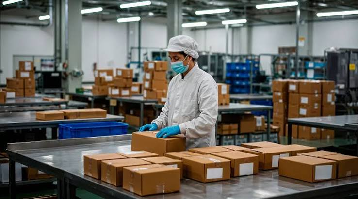
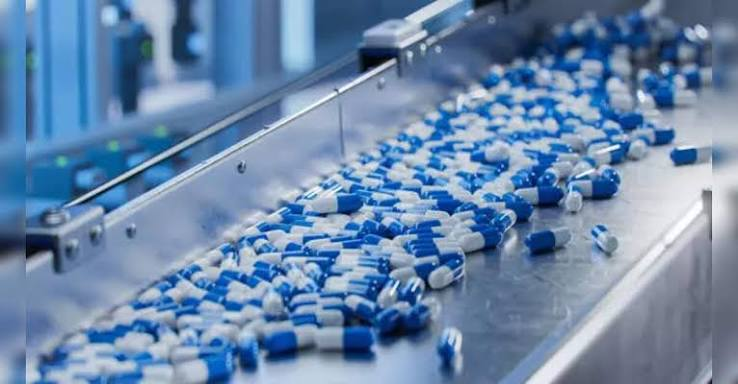

Research & Development
Where molecules become scalable processes.
Scientific development focused on practical routes, reproducibility, analytical understanding and manufacturing readiness.
Process Development
From route scouting to robust process.
Our R&D framework connects chemistry decisions with manufacturing realities, helping teams move from laboratory proof to scalable execution.

01
Route Scouting
Evaluate practical synthetic approaches.
02
Optimization
Improve yield, selectivity and process robustness.
03
Scale-Up
Translate the process into manufacturing conditions.
R&D Capabilities
Technical depth across the workflow.
01
Synthesis
Complex organic synthesis and route development.

Analytics
Analytical method development and characterization.
03
Optimization
Process parameters and impurity understanding.
04
Transfer
Documentation and manufacturing transfer support.